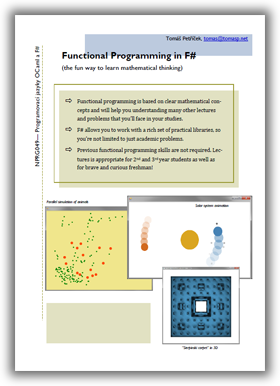

Functional Programming in F#
- Slides 1: Expression as a basic building block (pptx, pdf format)
- Tutorial: Sample project for Visual Studio 2008, that should work after installing F# CTP (zip format)
- Slides 2: Refactoring code using functions (pptx, pdf)
- Series demo: Console application that uses
ReadLineto calculate the sum of first X members of a number series(zip format) - Slides 3: Composing primitive types into data (pptx, pdf format)
- Drawing: Sample from the lecture that demonstrates how to draw using Windows Forms and a template for your homework plot (zip format)
- Slides 4: Generic and recursive types (pptx, pdf format)
- Recursion: Examples of recursive functions that traverse lists using structural recursion (zip format)
- Slides 5: Hiding recursion using function-as-values (pptx, pdf format)
- Sequences: A few notes regarding the "folds" homework and samples of using sequnece expressions (zip format)
- Slides 6: Sequence expressions, computation expressions & asynchronous workflows (pptx, pdf format)
- Monads: Examples of computation expressions (also known as monads) and asynchronous computations (zip format)
Homeworks
Most of the homeworks are puzzles that should be easy to solve once you get the idea. There will be shorter deadlines for these, so that we can reveal the solution afterwards :-). For more complicated homeowrks where you actually need to write some F# code, you'll have, of course, more time.
| Description | ID | Points | |
| 1. | Find an expression where evaluating the value of symbols first is better and another expression where replacing symbols with expressions is better (Note: better means smaller number of reduction steps (no unnecessary calculations). For more information, see Slides 1, slide 33. | reduction | 1 |
| 2. | Write expression that prints “yes” if the value of n is less than 10 and “no” otherwise. The trick is, that you should do this without using if and match construct. This can be solved using other language features that are discussed in Slides 1. | ifthen | 2 |
| 3. | Rewrite the following declaration to use only function declarations taking a single parameter. You can use currying as explained in Slides 2 (you may need to download the latest version of slides!):
let foo x y = let add a b c = (100 * a) + (10 * b) + c add y x | curry | 1 |
| 4. | Write a function drawFunc that takes a function as an argument and draws the graph of the given function using WinForms (You can download template that demonstrates how to draw something above!) The simplest possible type signature of the function is:
val drawFunc : (float32 -> float32) -> unitOptionally, it can take two additional parameters to specify the X scale and Y scale (+1 point). | plot | 1+1 |
| 5. | Write a function diff that performs numerical differentiation of a function (This follows similar pattern as other operations for working with functions such as translate from slide 29, Slides 2). The signature of the function should be:
val diff : (float32 -> float32) -> (float32 -> float32)You can use the standard definition of differentiation and use some small value of d (for example 0.01). | diff | 2 |
| 6. | We used “sum” of sets to model discriminated unions and “product” to model tuples (See Slides 3, slides 6 and 19). How can we use this operations to construct mathematical model of the following types:
type Season = | Spring | Summer | Autumn | Winter type Shape = | Circle of int | Rectangle of int * int | sets | 1 |
| 7. | Write a function that compares two vehicles (Data type in Slides 3, slide 22) and prints detailed information about the more expensive one (You can find the rules for comparison in Slides 3, slide 24). | patterns | 1 |
| 8. |
Write a function that counts the number of elements in the list that are larger than or equal to the average (using integer division for simplicity). The function should use just a single traversal of the list structure! It should give these results:
foo [1; 2; 3; 4] = 3 // average 2 foo [1; 2; 3; 6] = 2 // average 3 foo [4; 4; 4; 4] = 4 // average 4(Hint: You can perform some operation on the way "forward" and another operation on the way "backward", see also Slides 5, slide 14) | traversal | 1 |
| 9. |
Write a tail-recursive function that takes a list and “removes” all odd numbers from the list (that is, returns a copy of the list that doesn't contain odd numbers):
removeOdds [1; 2; 3; 5; 4] = [2; 4] // example
(Hints: 1. Tail-recursive functions do all processing when traversing the list forward. 2. You’ll need to do this during two traversals of some list)
| tail | 1 |
| 10. |
collect : ('a -> 'b list) -> 'a list -> 'b list
This function applies the given function to all elements of input list and concatenates all returned lists. It can be used for a wide range of different list processing operations.Use this function to implement projection and filtering for lists ( List.map and List.filter) with the usual type signatures (See Slides 5 for more information.)
| collect | 1 |
| 11. |
Write a more general function (e.g. | folds | 1+1 |
| 12. |
We've seen how to define a computation expression builder for creating computations that can be executed step-by-step using the Resumption type. The sample code also contains a function evaluate which evaluates a single computation and prints a number of each step before running it. Your task is to write a function parallel, which executes two step-by-step computations in parallel. When given computations first and second, it will execute one step of first, one step of second, one step of first etc. To show that your function works, write two computations (e.g. one that prints first ten factorials and other, which prints first ten fibonacci numbers). (See Slides 16 and download Monads demos above).
| resumptions | 2 |
| 13. |
Write a bind function for a simple Async type. This type represents an asynchronous computation:
type Async<'a> =
| Async of (('a -> unit) -> unit)
The type is represented as a function that takes a function as an argument. When the (outer) function is executed, it starts some operation. Once the operation completes (which could be immediately, or at some later time), it reports the result by calling the (inner) function, which it got as an argument. The bind function should have the following type (which pretty much tells you what it has to do):
val bind : Async<'a> -> ('a -> Async<'b>) -> Async<'b>
| bind | 3 |
Published: Sunday, 1 March 2009, 12:00 AM
Author: Tomas Petricek
Typos: Send me pull request!